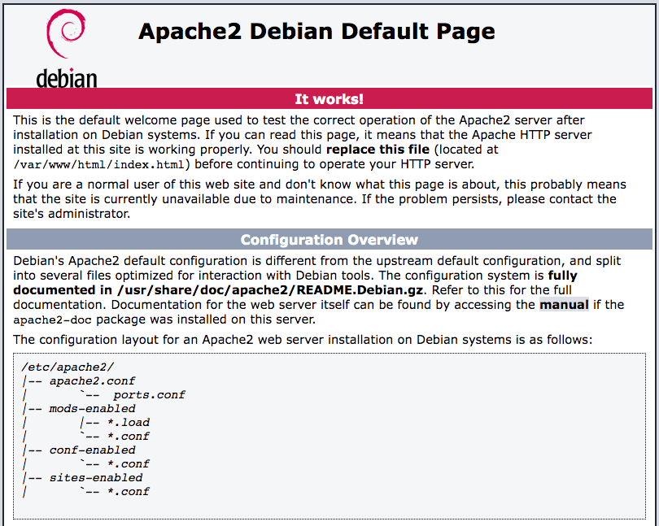
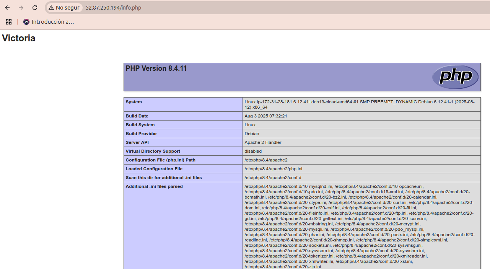

Practica 3.1 - Instalación de la pila LAMP
Introducción
Vimos en la teoría que existen distintas plataformas web libres, como LAMP y propietarias, como WISA. En esta práctica instalaremos una plataforma web LAMP completa, formada por:
- Linux: sistema operativo. En nuestro caso usaremos Debian.
- Apache: servidor web.
- MySQL o MariaDB: gestor de bases de datos. Nosotros instalaremos MariaDb.
- PHP: lenguaje interpretado PHP, aunque a veces se sustituye por Perl o Python.
Prerrequisitos
Antes de empezar con la instalación de los distintos componentes de la plataforma web necesitaremos:
- Crea en AWS Academy un EC2 Debian con los requisitos por defecto. Llámale PracticaLAMP
- Crea un Grupo de seguridad y llámale también PracticaLAMP. De momento abre los puertos para SSH, HTTP y HTTPS.
Conéctate por SSH al EC2 creado y actualiza el sistema.
Ahora ya podemos empezar a instalar los elementos de la plataforma uno a uno.
Instalación del servidor Apache.
Como todo servidor LAMP, lo principal es la A de Apache. Para instalar Apache únicamente debemos de ejecutar:
Comprobamos que se ha instalado correctamente y el servicio está en ejecución:
Si no estuviera arrancado recuerda que puedes usar sudo systemctl enable apache2 para activarlo y que se arranque al inicio y sudo systemctl start apache2 para arrancarlo.
Y listo, ya tenemos servidor web instalado. Ahora desde nuestro navegador favorito escribimos la IP pública de nuestro servidor Debian (con http:// recuerda) y nos debería de salir el index de Apache por defecto.

Instalación de MariaDB.
Ahora vamos a instalar un servidor de bases de datos para las aplicaciones que podamos instalar en nuestro servidor web, para ello instalaremos MariaDB que está basado en MySQL.
Como antes, comprobamos que el servicio está en marcha. Como MariaDB está basado en Mysql mantiene el nombre de servicio mysql:
Según la versión de MariaDB que se haya instalado, deberás configurar o no el servidor. A partir de MariaDB 10.11, el usuario root se crea sin contraseña pero autenticado mediante unix_socket, por tanto, puedes entrar con sudo mysql sin contraseña:
admin@ip-172-31-28-181:~$ sudo mysql
Welcome to the MariaDB monitor. Commands end with ; or \g.
Your MariaDB connection id is 213
Server version: 11.8.3-MariaDB-0+deb13u1 from Debian -- Please help get to 10k stars at https://github.com/MariaDB/Server
Copyright (c) 2000, 2018, Oracle, MariaDB Corporation Ab and others.
Type 'help;' or '\h' for help. Type '\c' to clear the current input statement.
MariaDB [(none)]>
Puedes conocer los distintos comandos con help o \h. Para salir \q.
Lenguaje PHP
Introducción a PHP
PHP es un lenguaje de programación interpretado de propósito general, pero se ha generalizado su uso en el desarrollo web. Aunque se puede ejecutar desde la línea de comandos, normalmente nos lo encontraremos embebido en el HTML.
<!DOCTYPE HTML>
<html>
<body>
<h1>Mi primera página <strong>PHP</strong></h1>
<?php>
echo "Hello world!";
?>
</body>
</html>
PHP es el componente que procesará código para mostrar contenido dinámico. Puede ejecutar secuencias de comandos, establecer conexión con sus bases de datos de MariaDB para obtener información y entregar el contenido procesado a su servidor web para su visualización.
Podemos servir páginas web PHP de varias formas:
- Con un servidor web (por ejemplo, apache2) y el módulo libapache2-mod-php. El servidor web sirve el contenido estático y el contenido dinámico generado por el PHP.
- Con un servidor web y un servidor de aplicaciones, por ejemplo, fpm-php. El servidor web sirve el contendio estático y hace de proxy inverso para las peticiones PHP, es decir, pasa a fpm-php las peticiones en las que hay que ejecutar el código PHP.
Instalación de PHP
Una vez más, utiliza el sistema apt-get para instalar PHP. Además, incluye algunos paquetes de helper esta vez para que el código de PHP pueda ejecutarse con el servidor Apache y comunicarse con su base de datos de MariaDB:
A continuación se describe cada librería:
php: instalará la versión más reciente disponible en los repositorios del sistema.libapache2-mod-php: módulo de apache2 que le permite ejecutar el código PHP. Es decir, apache2 será servidor web y servidor de aplicaciones PHP.php-mysql: librería PHP que posibilita el acceso a la base de datos mysql o mariadb.
Para que Apache aplique los cambios, es necesario reiniciar el servicio para que PHP esté activo.
Comprobaciones
Comprobación PHP
A fin de verificar que tu sistema esté configurado de forma adecuada para PHP, crearemos un fichero con una secuencia de comandos PHP muy básica, a este fichero lo llamaremos info.php. Para que Apache encuentre este archivo y lo presente correctamente, debe guardarse en un directorio muy específico llamado DocumentRoot. Este directorio se encuentra en /var/www/html. Crea el archivo en esa ubicación ejecutando lo siguiente:
Con esto se abrirá un archivo vacío. Añade el siguiente texto, que es el código PHP válido embebido en html, dentro del archivo /var/www/html/info.php
<html>
<head>
</head>
<body>
<h1>Escribe aquí tu nombre</h1>
<br >
<?php phpinfo(); ?>
</body>
</html>
Cuando termines, guarda y cierra el archivo. Recuerda que los ficheros que sirve el servidor web deben tener como propietario el usuario www-data:www-data.
Ahora puedes probar si tu servidor web puede mostrar correctamente el contenido generado por esta secuencia de comandos PHP. Para probar esto, visita esta página en tu navegador web. Necesitarás de nuevo la dirección IP pública de tu servidor Debian.
http://IPservidorDebian/info.php
La página a la que llegues debería tener un aspecto similar a este:

A partir del DocumentRoot /var/www/html puedes crear directorios con ficheros que servirá el servidor web accediendo con la IP del servidor más el path correspondiente. Por ejemplo, crea dos directorios sitio1xxx y sitio2xxx (donde xxx son tus iniciales). Dentro de cada directorio crea un fichero llamado index.php (deben tener contenidos diferentes). Puedes utilizar los ejemplos siguientes:
<html>
<head>
</head>
<body>
<h1>Escribe aquí tu nombre</h1>
<br >
<?php echo ‘sitio 1’; ?>
</body>
</html>
<html>
<head>
</head>
<body>
<h1>Escribe aquí tu nombre</h1>
<br >
<?php echo ‘sitio 2’; ?>
</body>
</html>
Comprueba que los dos ficheros se ven correctamente desde el navegador con las rutas http://IP/sitio1xxx y http://IP/sitio2xxx.
Si tenemos problemas de acceso podemos ver los logs del servidor:
- El fichero de logs de acceso por "defecto":
/var/log/apache2/access.log. Donde se registra los accesos al servidor desde los clientes. - El fichero de logs de errores por" defecto":
/var/log/apache2/error.log. - También podemos ver los logs del servicio ejecutando:
journalctl -u apache2.
Comprobación acceso a la base de datos
Si necesitas crear una base de datos y un usuario que tenga acceso a la misma, deberás entrar en el servidor de la base de datos con el comando mysql -u root -p (o bien sudo mysql si no has configurado contraseña para el root) y una vez dentro ejecutar los siguientes pasos:
CREATE DATABASE newdb;
CREATE USER 'username'@'localhost' IDENTIFIED BY 'userpassword';
GRANT ALL PRIVILEGES ON newdb.* to 'username'@'localhost';
FLUSH PRIVILEGES;
quit
Observa que el usuario creado tiene todos los privilegios sobre la base de datos creada pero sólo puede conectarse al servidor desde la máquina local. Para poder conectarse desde una máquina remota utilizaríamos el comodín '%' en lugar de localhost.
Para comprobar que podemos acceder a la base de datos que acabamos de crear con el usuario y contraseña indicados, crea un fichero llamado prueba_base_datos.php con el siguiente contenido y guárdalo en el DocumentRoot.
<?php
$username="username";
$password="userpassword";
$database="newdb";
$mysqli = new mysqli("localhost", $username, $password, $database);
$mysqli->select_db($database) or die( "Unable to select database");
echo "PRUEBA DE CONEXIÓN A LA BD $database CON EL USER $username OK";
$mysqli->close();
?>
http://IP/prueba_base_datos.php.
Conclusión
Hemos instalado la plataforma web LAMP completa con las últimas versiones de cada uno de sus elementos.
Ahora ya podrás instalar cualquier aplicación o servicio que requiera dicha plataforma para funcionar.
Recuerda al finalizar la práctica parar el laboratorio AWS Academy para no seguir consumiendo recursos innecesariamente.
Consulta el siguiente recurso para más detalle sobre la pila LAMP y comando útiles sobre cada uno de sus componentes.